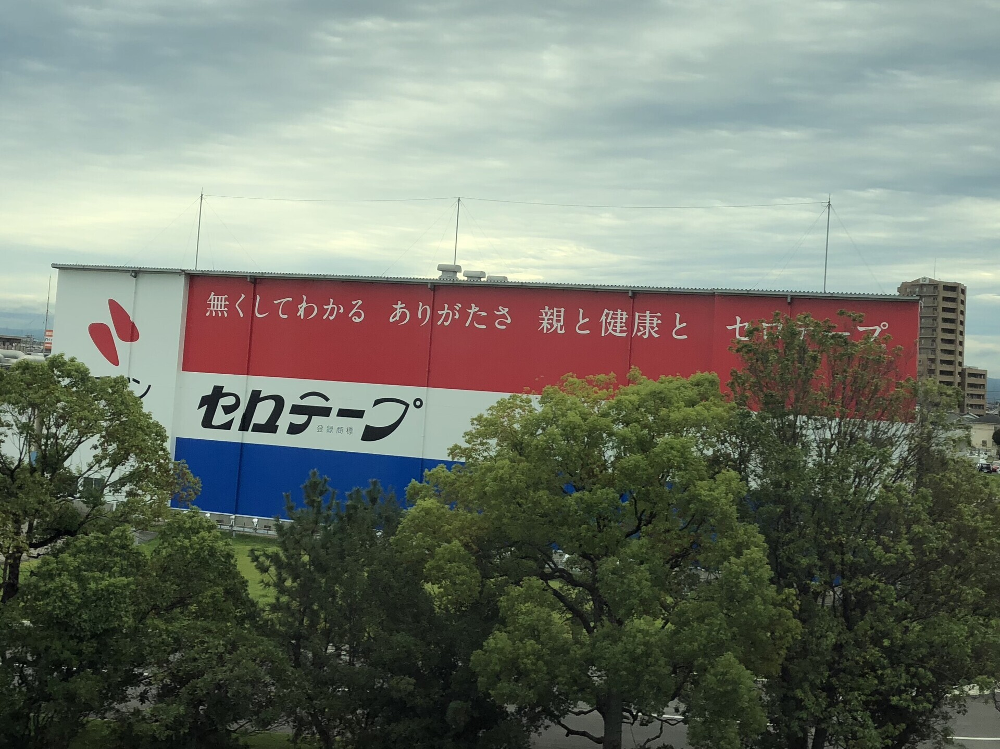

- พื้นที่
- บริเวณมิคาวะอันโจ
- ฝั่งที่นั่ง
- ที่นั่ง E · ฝั่งขวาเมื่อไปชินโอซาก้า; ฝั่งซ้ายเมื่อไปโตเกียว
- เวลา
- ประมาณ 88 นาทีหลังออกจากโตเกียวด้วยโนโซมิ
- ช่วงที่มองเห็น
- ไม่กี่วินาทีเวลาโดยประมาณของโนโซมิ อาจต่างกันตามความเร็วรถไฟ สภาพอากาศ และสิ่งบดบัง
เรื่องราว
โรงงานนั้นผลิตอะไรกันแน่
ผนังนี้เป็นของโรงงานอันโจ บริษัทนิชิบัน ก่อตั้งปี 1918 ในชื่อ Utahashi Seiyakusho เป็นผู้ผลิตเทปกาวและวัสดุปฐมพยาบาลเก่าแก่ แบรนด์ประจำวัน เช่น CELLOTAPE พลาสเตอร์ Care Leaves และเทปกีฬา BATTLE WIN คุ้นเคยแทบทุกบ้านญี่ปุ่น อันโจเป็นโรงงานหลักแห่งหนึ่ง เปิดปี 1967 ส่วน CELLOTAPE เริ่มปี 1948 ตัวอาคารเป็นโรงงานธรรมดา แต่ใช้ผนังหันหาชินคันเซ็นเป็นโฆษณายักษ์ จึงเป็นหนึ่งในป้ายข้างทางที่จำได้ง่ายที่สุดของโทไคโดชินคันเซ็น
จากโตเกียวไปชินโอซาก้า เริ่มดูหน้าต่างขวา (E) เมื่อใกล้มิคาวะอันโจ ขาโตเกียวลำดับกลับกันและ E เดิมอยู่ซ้าย
สิ่งที่น่าชม
เกี่ยวกับ CELLOTAPE และคำโฆษณาหนึ่งบรรทัด
“CELLOTAPE®” เป็นเครื่องหมายการค้าของนิชิบันสำหรับเทปกาวใสฐานเซลโลเฟน หลังสงครามโลกครั้งที่สอง การจัดซื้อของ GHQ สร้างความต้องการเทปชนิดนี้ นิชิบันจึงเป็นผู้ผลิตหลักในประเทศและขยายผลิตจำนวนมาก ในญี่ปุ่น เทปใสเครื่องเขียนมักเรียกเซโรเทปุ ตามแบรนด์นิชิบัน กลายเป็นคำประจำวันแทนชื่อสินค้าเฉพาะ
ผนังเคยมีคำโฆษณาหลายแบบ หนึ่งในประโยคที่คนชอบคือ “จะรู้คุณค่าเมื่อหายไป: พ่อแม่ สุขภาพ และ CELLOTAPE” เปลี่ยนของใช้ในบ้านให้เตือนถึงสิ่งที่เคยมองข้าม เป็นน้ำเสียงแปลกสำหรับป้ายข้างรางและคนมักจำได้ ผนังทาสีใหม่เป็นระยะ ข้อความที่คุณเห็นจึงอาจไม่เหมือนที่เพื่อนจำได้
โฆษณาข้างรางญี่ปุ่นบางครั้งไปไกลกว่าโลโก้หรือการขายตรง เพื่อพูดสิ่งที่สะกิดใจผู้โดยสารเบา ๆ ป้าย 727 ป้ายให้กำลังใจ Shippei และผนัง CELLOTAPE เป็นสามตัวอย่างคลาสสิก ผู้เดินทางประจำเพลินกับการรอดู “ข้อความวันนี้” เงียบ ๆ
บนแผนที่
ดูตำแหน่งอย่างรวดเร็ว
เปิดแผนที่สลับระหว่างตำแหน่งสถานที่กับจุดที่มองจากชินคันเซ็น
คู่มือริมหน้าต่างของคุณ
อย่าพลาดชมวิว
ภาพเคลื่อนไหว
ป้ายผนัง CELLOTAPE ในภาพเคลื่อนไหว
ป้ายอยู่ในสายตาเพียงไม่กี่วินาที วิดีโอนี้แสดงให้เห็นว่าเลื่อนผ่านเร็วเพียงใด
จากที่นั่ง E: ป้ายปรากฏและเลื่อนผ่านไปแบบไม่ตัดต่อ
แหล่งที่มา: https://www.youtube.com/watch?v=9p_XwjtzHBI
วิดีโอนี้ใช้การฝังจาก YouTube อย่างเป็นทางการ
อ่านเพิ่มเติม
เอกสารอ้างอิง
คำแนะนำทางการและบันทึกวิวจากหน้าต่าง